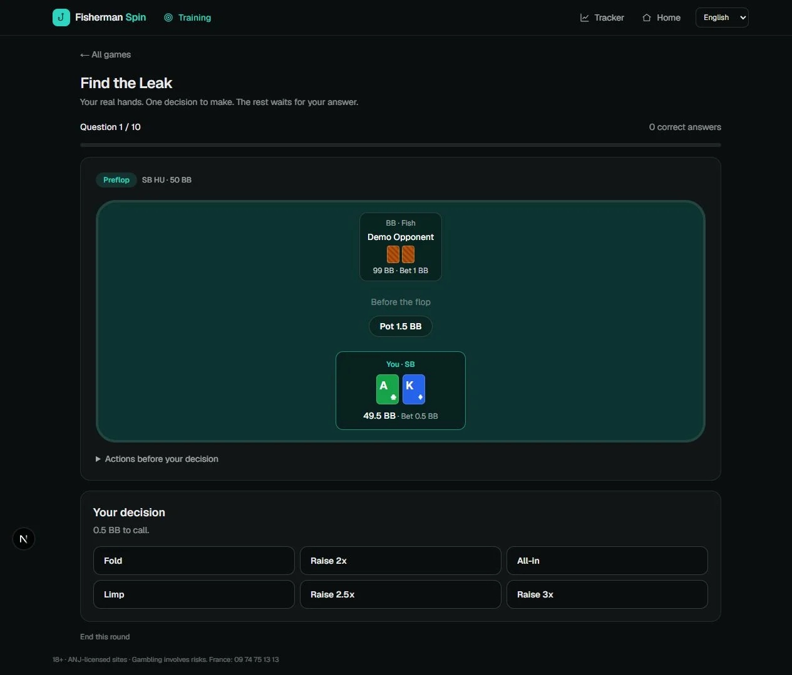
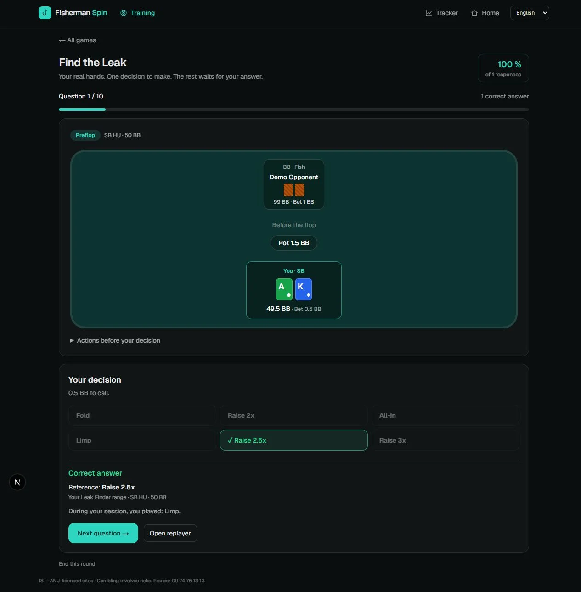

Review your strategy.
Find matching decisions, deviations and situations your map does not cover.

Turn your completed Spin hands into a study routine. Compare your play with your own ranges and strategy maps, then practise with Find the Leak.
French and English in the same app · 14-day Complete trial, no card required
We are recruiting five volunteers to validate the English experience. International room variants are still being tested.
Fisherman follows the references you provide. A deviation means a difference from your plan; it does not automatically prove a poker mistake.
Find matching decisions, deviations and situations your map does not cover.
Practise on completed hands without seeing the action you originally took.

Read the correction against your reference, then reopen the hand in the replayer.

Screenshots use sample data. Exercises require imported hands covered by your own ranges or strategy maps.
The Complete trial starts when you create your account. No payment card is required. Pilot participation does not renew an existing trial.
€0
Keep your latest 2,000 Spins
€14.99
per month
€24.99
per month
Prices include VAT and are charged in EUR. Subscriptions and optional extra GTO tokens are managed in the app’s Account page. The Unibet HUD is subject to the compatibility limits below.
Readers exist for Betclic, Unibet, Winamax Expresso and Expresso Nitro. Local EUR samples have passed import checks. This does not validate every country, client language or export format.
Other currencies are rejected explicitly in this pilot. PokerStars, GGPoker and other room formats are not supported by these readers. Live Unibet HUD behaviour on international clients still needs real-table testing.
Read the compatibility scope →Try one completed session, find one useful review, and tell us whether you return a week later. Your room and regional client matter more than your volume.